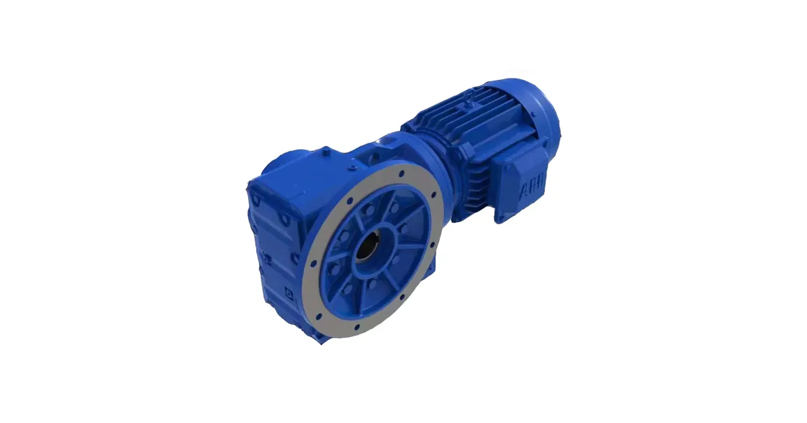

Собственное производствоПромышленные редукторы для производителей оборудования•Отгрузка по всей России•Аналоги SEW, NORD, Bonfiglioli без переделки рамы•Расчёт и КП за 15 минут•Гарантия 36 месяцевПромышленные редукторы для производителей оборудования•Отгрузка по всей России•Аналоги SEW, NORD, Bonfiglioli без переделки рамы•Расчёт и КП за 15 минут•Гарантия 36 месяцев
Flender серия T — коническо-цилиндрические редукторы в разъёмном корпусе
Flender серия T — коническо-цилиндрические редукторы в разъёмном корпусе, типоразмеры с 4 по 12. От серии B их отличает не кинематика, а конструкция корпуса: он собирается из двух половин по плоскости, проходящей через оси валов. Это оборудование ремонтопригодного тяжёлого класса — для приводов, которые обслуживают на месте, не снимая с фундамента.

Коническо-цилиндрический привод тяжёлого класса
Что такое серия T у Flender
Буква T в номенклатуре Flender обозначает коническо-цилиндрический редуктор в разъёмном корпусе. Типоразмерный ряд — с 4 по 12. Кинематика та же, что у серии B: коническая ступень разворачивает поток мощности на 90°, дальше момент идёт через цилиндрические ступени. Принципиальная разница — в корпусе.
У неразъёмного (моноблочного) корпуса валы с подшипниками заводятся внутрь через технологические окна и крышки. У разъёмного корпус состоит из основания и крышки, состыкованных по плоскости, проходящей через оси валов. Чтобы добраться до зубчатых колёс и подшипников, достаточно снять верхнюю половину — весь набор валов остаётся лежать в постелях основания.
Зачем нужен разъёмный корпус
Ревизия без демонтажа. Редуктор не снимают с фундамента и не разбирают муфты — открыли крышку, осмотрели пятно контакта, замерили боковой зазор, закрыли. Для крупного привода это разница между часами и сутками простоя.
Замена подшипников на месте. Подшипниковые узлы лежат в разъёме, их меняют, не выпрессовывая валы через корпус.
Честная дефектовка. Видно всё зацепление целиком: выкрашивание, задиры, износ по профилю. По моноблочному корпусу такую картину без полной разборки не получить — подробнее в термине дефектовка редуктора.
Ремонтопригодность на длинном горизонте. Тяжёлые приводы живут десятилетиями, и стоимость владения определяется не ценой покупки, а тем, насколько дёшево обходится каждое вскрытие.
Плата за это — более сложный корпус: плоскость разъёма должна быть обработана и уплотнена, крепёж крышки рассчитан на нагрузку, а сама конструкция получается тяжелее моноблочной при равной несущей способности. Поэтому разъёмный корпус применяют там, где обслуживание критично: мельницы, дробилки, вращающиеся печи, магистральные конвейеры, приводы шахтного и металлургического оборудования.
Как читается обозначение серии T
Логика та же, что и у остальных серий Flender: тип · число ступеней · вид выходного вала · монтаж · типоразмер. Первая позиция — T, дальше число ступеней, затем буква вида выходного вала (S — сплошной, V — сплошной усиленный, H — полый со шпонкой, D — полый под стяжную втулку, K — полый шлицевой по DIN 5480, F — фланцевый), признак монтажного положения и номер типоразмера из ряда 4–12. Полный разбор всех позиций — на странице обозначение Flender.
Числовых рядов момента и передаточных чисел по серии T мы намеренно не приводим: в нашем справочнике по ней зафиксированы только тип конструкции и ряд типоразмеров 4–12. Точные значения берите с шильда конкретного изделия или из каталога MD 21.1 — выдумывать цифры для тяжёлого привода нельзя.
Как подобрать замену редуктору Flender T
Соответствия «модель Flender → наш типоразмер» не существует, и мы его не публикуем. Замена подбирается расчётом:
Шильд. Полное обозначение, передаточное число, момент или мощность, обороты, заводской номер, монтажное положение.
Чертёж или обмеры. Высота оси, положение конического входа, диаметр и вылет выходного вала, тип посадки (полый вал, стяжная втулка, фланец), схема опор — см. габаритно-присоединительные размеры.
Условия эксплуатации. Часы в сутки, число пусков, ударность нагрузки, реверс, запылённость, температура — отсюда берётся сервис-фактор и требования к охлаждению.
Расчёт. Предварительно — калькулятор подбора, окончательно — инженер по заявке.
Что честно сказать заранее. Серия T — тяжёлое промышленное оборудование, а не мотор-редуктор из общепромышленного ряда. Мы не обещаем замену «один в один» серийной линейкой: по таким приводам решение считается индивидуально — под конкретный чертёж, момент и режим, вплоть до изготовления по размерам заказчика. Подход к замене импорта описан в разделе импортозамещение, ориентиры по стоимости — в разделе цены.
Разъёмный корпус — ради ревизии на месте; по подбору замены см. раздел Flender
Частые вопросы: Flender серия T
Что такое Flender серия T?
Flender серия T — коническо-цилиндрические редукторы в разъёмном корпусе, типоразмеры с 4 по 12. Кинематика как у серии B: коническая ступень разворачивает поток мощности на 90°, дальше идут цилиндрические ступени. Отличие — корпус из двух половин с разъёмом по осям валов.
Чем серия T отличается от серии B?
Не кинематикой, а конструкцией корпуса. У серии T корпус разъёмный: снимается верхняя половина, и открывается доступ к зубчатым колёсам и подшипникам без снятия редуктора с фундамента. Ряд типоразмеров у серии T — 4–12.
Зачем нужен разъёмный корпус редуктора?
Ради обслуживания. Ревизия зацепления, замер бокового зазора и замена подшипников выполняются на месте, без демонтажа привода и расстыковки муфт. Для крупных приводов это резко сокращает простой оборудования.
Какой момент и передаточное число у серии T?
В нашем справочнике по серии T зафиксированы только тип конструкции и ряд типоразмеров 4–12; числовых рядов момента и передаточных чисел мы не приводим, чтобы не давать выдуманных данных. Точные значения смотрите на шильде изделия или в каталоге Flender MD 21.1.
Чем заменить редуктор Flender серии T?
Подбором по шильду и габаритному чертежу с проверкой момента, передаточного числа, вида выходного вала и режима работы. Готовой таблицы соответствий с нашими типоразмерами нет: по такому классу приводов решение считается индивидуально, вплоть до изготовления по размерам заказчика.
Как оформить заказ?
Заявка через сайт, письмо на zr@zavod-red.ru или звонок менеджеру. Для юрлиц — счёт по реквизитам, для частных лиц — оплата картой.
Какая доставка по России?
Любой транспортной компанией до терминала или двери; отгрузка со склада в Челябинске за 1–3 дня, упаковка — обрешётка.
Как подобрать редуктор под задачу?
Нужны: мощность двигателя, обороты на входе и выходе, крутящий момент, режим работы. Инженер рассчитывает типоразмер и передаточное число.
Какая гарантия на редуктор?
36 месяцев с даты отгрузки. Паспорт изделия, декларация ЕАС, сертификат ГОСТ. При заводском дефекте — замена по договору.
Flender серия T — коническо-цилиндрические редукторы в разъёмном корпусе, типоразмеры 4–12: зачем нужен горизонтальный разъём корпуса, чем серия отличается от B, как читается обозначение и как подобрать замену по шильду и чертежу. Расчёт от Завода Редукторов (ООО «НИИ АТТ», Челябинск).
Партнёрская программа завода
Инженерам и проектировщикам — 5% с заказа
Рекомендуете наши редукторы коллегам, заказчику или своему отделу снабжения? За каждый состоявшийся заказ по вашей рекомендации выплачиваем 5% от суммы — реферальное вознаграждение переводом на карту. Прозрачный договор, работа со снабженцами и проектными отделами напрямую, отгрузка от производителя (ООО «НИИ АТТ», Челябинск).